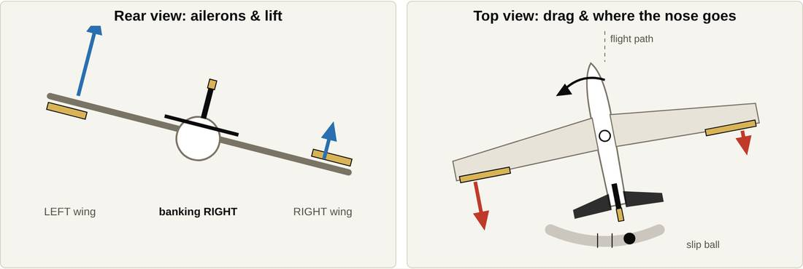

ASYS 245 · Module 3 · Study sheet
Adverse Yaw
Why the nose swings the wrong way when you roll, and the five ways to stop it.
Name: ____________________
1
What it is
Adverse yaw: the nose yaws away from the direction of the roll. Roll right → the nose first swings left. It happens around the vertical axis but is caused by the ailerons.
Aileron: moving surface on the wing's trailing edge; controls roll
Camber: curve of the wing; more camber = more lift
Induced drag: drag from making lift; more lift = more drag
Yaw: nose swings left/right (vertical axis)
Coordinated turn: aileron + rudder together
Rising / descending wing: roll right = left wing rises
2
What you see: roll right, plain ailerons, no rudder

Blue = lift, red = drag. The rising left wing has more lift and more drag, so the nose swings left and the slip ball slides right. (From the online Adverse Yaw Lab.)
3
The cause, step by step (roll right)
Aileron moves
Left aileron down, right aileron up.
Left aileron down, right aileron up.
Camber changes
Down aileron = more camber on the left wing.
Down aileron = more camber on the left wing.
Lift changes
Left wing makes more lift and rises.
Left wing makes more lift and rises.
Drag follows lift
More lift = more induced drag on the left wing.
More lift = more induced drag on the left wing.
Wing pulled back
Extra drag pulls the left wingtip back.
Extra drag pulls the left wingtip back.
Nose swings left
Away from the turn, around the vertical axis.
Away from the turn, around the vertical axis.
Effects
- Nose swings the wrong way at the start of a turn
- Uncoordinated: aircraft slips; ball off centre
- More drag, lost speed; uncomfortable
- Worst at low speed, high angle of attack, big aileron inputs, long wings
- Near a stall, uncoordinated flight raises spin risk
Parts involved
- Ailerons: start it (camber, lift)
- Wings: uneven lift and drag
- Vertical axis: what the nose yaws around
- Rudder: the pilot's fix
- Vertical stabilizer: resists some yaw
- Spoilers: roll without adverse yaw
Real life
Student's first turn: wheel left, feet still → nose swings right, ball slides left. Fix: "step on the ball", left rudder with left aileron.
Gliders: very long wings = strong adverse yaw. A yaw string on the canopy shows when the glider is slipping.
4
The fixes · pilot: rudder with aileron · designers: the four below
Differential ailerons
- Simply
- The up aileron moves farther than the down aileron.
- How
- Extra drag on the descending wing; less extra lift and drag on the rising wing. Cancels most, not all.
- Used
- Light single-engine aircraft
- e.g.
- Cessna 172, Piper PA-28
Frise ailerons
- Simply
- The raised aileron's nose dips below the wing into the airflow.
- How
- Set-back hinge → drag on the descending wing. Also lightens control forces.
- Used
- Light aircraft, often with differential travel
- e.g.
- Cessna 172 and many light aircraft
Aileron–rudder interconnect

FAA (public domain)
- Simply
- Springs link the ailerons to the rudder.
- How
- Roll right → springs pull the right rudder pedal forward → right rudder cancels the left yaw. Pilot can override.
- Used
- Some light single-engine aircraft
- e.g.
- Beechcraft Bonanza; Ercoupe (fully linked, no pedals)
Roll spoilers

FAA AMT Handbook: Airframe (public domain)
- Simply
- Panels on top of the wing pop up on the wing you want to go down.
- How
- Spoils lift + adds drag on the descending wing → drag on the turn side → nose yaws into the turn.
- Used
- Large jets (with ailerons); frees room for big flaps
- e.g.
- Boeing 737/747; Mitsubishi MU-2 (spoilers only)
| Fix | Drag goes to | Pros | Cons |
|---|---|---|---|
| Rudder (pilot) | — rudder yaws nose | Works on every aircraft | Pilot skill needed |
| Differential | Descending wing | Simple, light | Reduces, doesn't remove |
| Frise | Descending wing | Lighter control forces | Reduces, doesn't remove |
| Interconnect | — springs add rudder | Automatic | Extra parts |
| Roll spoilers | Descending wing | No adverse yaw; big flaps | More complex |
Explain it
1. Roll left with ailerons only. Which way does the nose go, and why?
2. Which wing gets the extra drag from every design fix, and why does that help?
3. Ball slides right in a right turn. Which rudder pedal?
Sources: SAIT ASYS 245 Module 3 slides (Jeppesen Airframe Technician pp. 1-23 to 1-26), SAFA class notes; FAA Pilot's Handbook of Aeronautical Knowledge (FAA-H-8083-25) and AMT Handbook: Airframe (FAA-H-8083-31). Connects to Module 2 (camber, induced drag) and Module 4 (ailerons, spoilers).